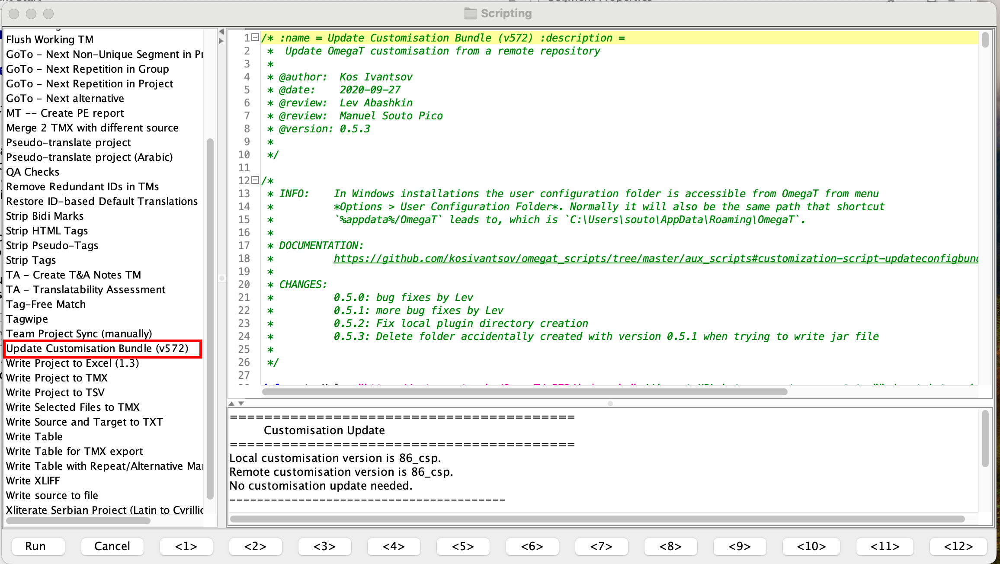

Руководство по установке OmegaT 5.7.2 для macOS¶
Вам следует тщательно выбрать правильный вариант, исходя из своих начальных условий:
- Если у вас уже установлена предыдущая версия OmegaT (например, 5.7.1 или 4.2.0), вам следует сначала обновить конфигурацию программы. Как это сделать, описано в разделе о конфигурации (следующий раздел).
- Если в настоящий момент на вашем компьютере OmegaT не установлена, вам нужно вначале установить программу, как описано в разделе об установке. После установки вам понадобится скачать и запустить скрипт конфигурации, как описано в пунктах 2 и 3 раздела о конфигурации (следующий раздел).
Конфигурация¶
Этот раздел предназначен для пользователей, на компьютере которых уже установленна предыдущая версия OmegaT (например, 5.7.1 или 4.2.0). Для обновления конфигурации программы выполните шаги, приведенные ниже.
- Run OmegaT and go to Tools > Scripting to open your scripting console, In OmegaT 5.7.1, please open the scripting console. Проверьте, есть ли у вас скрипт под названием Update Customisation Bundle (v572):
!!! Предупреждение Если в названии нет фрагмента v572, то это не тот скрипт, который нам нужен. В следующем шаге описано, где взять этот скрипт.

Если скрипт Update Customisation Bundle (v572) есть в списке, выберете его щелчком мыши и нажмите кнопку Run (Выполнить) в левом нижнем углу окна для запуска скрипта. Скрипт выполнит обновление файлов конфигурации и завершит работу OmegaT. Далее пропустите следующий шаг и перейдите непосредственно к разделу установки.
Если скрипт отсутствует в списке, вы можете скачать его самостоятельно. В дальнейших шагах описано, как это сделать.
- Нажмите правой кнопкой мыши на кнопку ниже и выберите «Сохранить как», чтобы загрузить скрипт конфигурации (например, на рабочий стол)7
Скачать UpdateConfigBundle.groovy
-
В главном окне OmegaT выполните следующие действия для запуска скаченного скрипта конфигурации:
-
Tools (Инструменты) > Scripting (Скрипты) > File (Файл) > Open script (Открыть скрипт).
- Перейдите на рабочий стол (или в папку, в которой был сохранен скрипт) и выберите файл с расширением groovy.
- Нажмите кнопку Open (Открыть), чтобы открыть файл скрипта, далее нажмите кнопку Run (Выполнить)в левом нижнем углу окна.

Скрипт установит необходимые файлы конфигурации для OmegaT 5.7.2 и удалит старые файлы для предыдущих версий, после чего завершит работу программы.
- Удалите текущую версию OmegaT.
Для этого просто переместите установленное приложение OmegaT.app в Корзину.
- После этого переходите к разделу установки (следующий шаг).
Установка¶
- Нажмите на кнопку ниже, чтобы загрузить OmegaT 5.7.2. Это специальная версия, подготовленная компанией cApStAn. Она включает в себя несколько исправлений ошибок и улучшений, недоступных в других версиях.
-
Если вы используете Safari, то по окончании загрузки файл будет распакован автоматически. Если вы используете другой браузер, то для распаковки файла вам нужно дважды щелкнуть на нем по окончании загрузки.
-
Скачанный файл будет распакован в новую папку — откройте ее, чтобы просмотреть содержимое. Внутри вы увидите файл OmegaT.app.
-
Перетащите файл OmegaT.app в папку Applications (Приложения).
- Теперь OmegaT установлена. Перейдите в папку Applications (Приложения) и откройте находящееся там приложение OmegaT.app.
- macOS может запросить подтверждение того, что вы действительно хотите запустить приложение. Если это произойдет, нажмите Open (Открыть). Далее запустится OmegaT.
- Если вы хотите выполнить проверку после установки, чтобы убедиться, действительно ли у вас установлена правильная версия, вы можете проверить это в меню Help (Справка) > About (О программе) > Copy Support Info (Копировать информацию для поддержки). Вы должны увидеть:
Version: OmegaT-5.7.2_0_a978d82ee
Platform: [ваша операционная система]
Java: 11.0.19 amd64
Все готово. Можно приступать к использованию OmegaT 5.7.2.